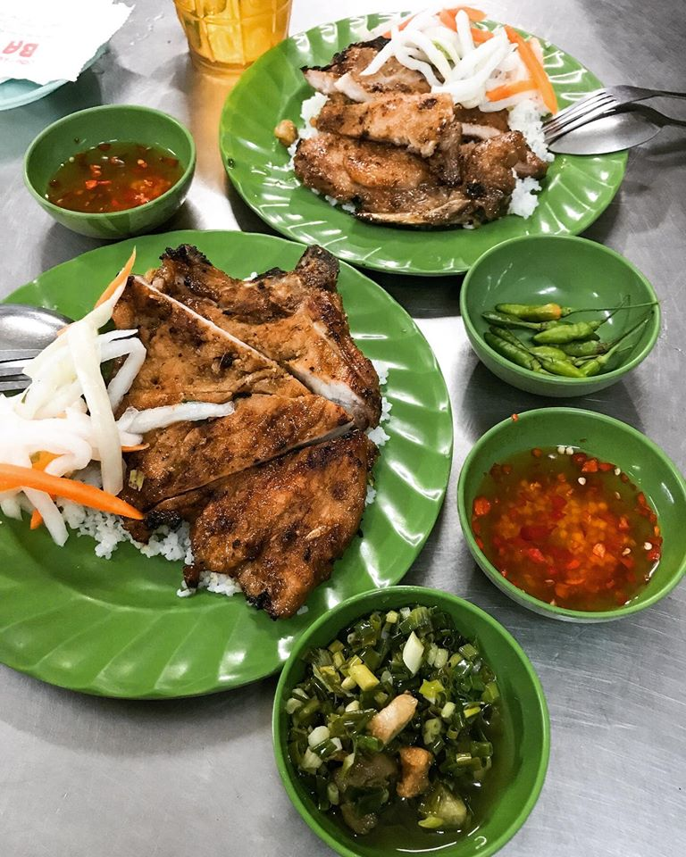

Những quán cơm tấm ngon có tiếng ở Sài Gòn
Nếu Hà Nội nổi tiếng với bún chả, phở bò thì Sài Gòn lại đặc trưng bởi món cơm tấm ngon nhức nách. Người Sài Gòn đi đâu lâu ngày, đặc biệt nếu phải ra miền Bắc thì ai ai cũng nhớ về hương vị của những miếng sườn nướng thơm nức dai dai đặt trên những hạt cơm tấm chan với mỡ hành thơm lừng.
Đặc trưng của cơm tấm Sài Gòn
Cơm tấm được làm từ loại gạo tấm, tức là loại gạo hạt nhỏ, có phần hơi nát. Khi ăn, hạt cơm tơi, có màu trắng hơi đục, có phần hơi khô chứ không tròn trịa và trắng dính như loại cơm mà ở nhà ta hay thường ăn. Tuy nhiên loại cơm này khi ăn ta lại cảm thấy ngọt trong cổ, xốp, và vô cùng thơm. Ăn cùng cơm tấm thường có sườn nướng, bì heo, trứng ốp la, trứng hấp, đấy là cơm tấm đúng chất Sài Gòn nhất. Về sau để đa dạng hơn cũng như phục vụ những người ăn, các quán cơm tấm bắt đầu chế biến thêm nhiều món như gà nướng, gà kho, cá kho, xúc xích vv.. tạo nên một bàn ăn với màu sắc vô cùng phong phú.
Khi khách kêu cơm, người bán sẽ xới cơm còn nóng hổi từ nổi, cho đồ ăn và rưới thêm một lớp mỡ hành lên trên. Ăn kèm cơm thường có đồ chua từ cà rốt củ cải, canh cải chua thịt bò hoặc dưa leo. Đặc biệt không thể thiếu chén nước mắm ớt. Ngoài miếng thịt sườn thơm phức nóng hổi ra thì nước mắm cũng chính là một phần linh hồn không thể thiếu làm nên hương vị đặc trưng của món cơm tấm. Nước mắm được pha thêm cùng đường và ớt tạo nên vị mặn ngọt cay cay, kết hợp cùng một chút đồ chua hoà quyện lại rưới lên miếng sườn nóng hổi bóng bẩy vô cùng đậm đà và thơm ngon.
Miếng sườn nướng to bao trọn cả dĩa cơm giúp người ăn no bụng và có đủ sức để làm việc. Ảnh Thảo Như
Không